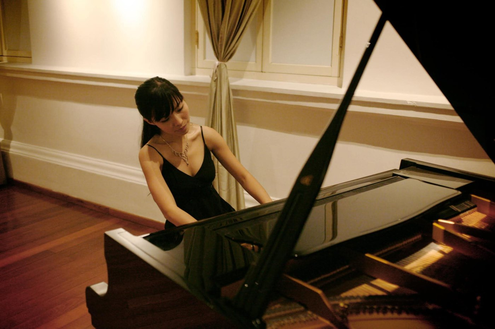

Wat meenemen
Een yogamatje, een dekentje of een dik kussen. Je ligt op de vloer, dus alles wat comfortabel ligt is goed.
Groen Kwartier Sessies
Zaterdag 12 december 2026 · Een liggend pianoconcert

Lin neemt ons mee voor een liggend pianoconcert. Je strekt je uit op de vloer, doet je ogen dicht als je daar zin in hebt, en laat je meeslepen op de pianoklanken.
Neem daarom een matje of een kussen mee, dan lig je comfortabel.
Let us go then, you and I,
When the evening is spread out against the sky
Like a patient etherized upon a table;
Een uur lang Bach, verweven met Bill Evans. Schubert met Thelonious Monk. Zit of lig, luister of dommel weg. De harmonieën die door drie eeuwen pianomuziek heen klinken, brengen soms verrassende ontmoetingen aan het licht — in gedachte en in gevoel.
Let us go, through certain half-deserted streets,
The muttering retreats
Of restless nights
Lin Li is een Singaporese die in België woont. Ze kreeg haar opleiding van wijlen professor Yu Chun Yee en behaalde een LRSM, het uitvoerende diploma van de Royal Schools of Music. Dit is haar eerste uitstap buiten het klassieke repertoire.
Niet vergeten
een matje of een kussen
Per persoon inschrijven. Er zijn 60 plaatsen. Kom je met twee? Vul het formulier dan twee keer in — hetzelfde e-mailadres mag.
We gebruiken je naam en e-mailadres enkel om je inschrijving te bevestigen en je het adres te bezorgen. We delen ze met niemand en verwijderen ze na de sessie. Meer over hoe we met je gegevens omgaan.
Voor en na het concert
open bar
Een yogamatje, een dekentje of een dik kussen. Je ligt op de vloer, dus alles wat comfortabel ligt is goed.
Publiek houden we het bij “Groen Kwartier, Antwerpen”. Het volledige adres staat in je bevestigingsmail, die je binnen enkele minuten na je inschrijving krijgt.
€ 10 per persoon, vooraf te betalen via de betaallink in je bevestigingsmail. Je inschrijving is definitief zodra de betaling binnen is; we houden je plek vijf dagen vrij. Je hebt geen ticket nodig — je naam staat op de lijst.